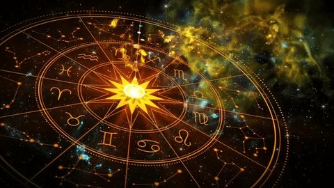
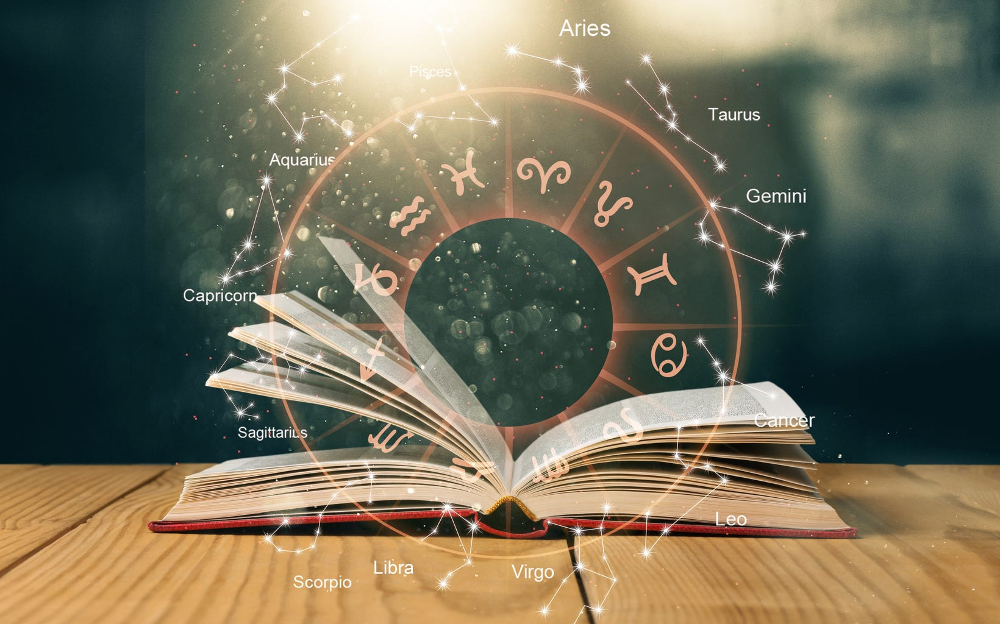

VÄLKOMMEN TILL AM Zodiac
Upptäck din kosmiska berättelse
Lär känna ditt stjärntecknen och dess traditionella betydelse.
DE TOLV TECKNEN
Vilket är ditt stjärntecken
Välj ditt tecken och läsa mer om dess traditionella egenskaper.
♈
Väduren
21 mars - 19 april
Väduren förknippas traditionellt med energi, självförtroende och mod. Personer födda i Vädurens tecken beskrivs ofta som aktiva och entusiastiska.
♉
Oxen
20 april - 20 maj
Oxen förknippas traditionellt med tålamod, lojalitet och stabilitet. Personer födda i Oxens tecken beskrivs ofta som lugna och pålitliga.
♊
Tvillingarna
21 maj - 20 juni
Tvillingarna förknippas traditionellt med nyfikenhet, kommunikation och anpassningsförmåga. De beskrivs ofta som sociala och intresserade av nya idéer.
♋
Kräftan
21 juni - 22 juli
Kräftan förknippas traditionellt med känslighet, omtanke och känslor. Personer i detta tecken beskrivs ofta som omtänksamma och familjeorienterade.
♌
Lejonet
23 juli - 22 augusti
Lejonet förknippas traditionellt med kreativitet, självförtroende och generositet. Lejon beskrivs ofta som varma och uttrycksfulla.
♍
Jungfrun
23 augusti - 22 september
Jungfrun förknippas traditionellt med organisation, praktiskt tänkande och noggrannhet. De beskrivs ofta som hjälpsamma och eftertänksamma.
♎
Vågen
23 september - 22 oktober
Vågen förknippas traditionellt med balans, harmoni och relationer. Personer i Vågens tecken beskrivs ofta som vänliga och diplomatiska.
♏
Skorpionen
23 oktober - 21 november
Skorpionen förknippas traditionellt med passion, beslutsamhet och mystik. Skorpioner beskrivs ofta som fokuserade, lojala och intensiva.
♐
Skytten
22 november - 21 december
Skytten förknippas traditionellt med äventyr, optimism och självständighet. Skyttar beskrivs ofta som nyfikna och intresserade av världen.
♑
Stenbocken
22 december - 19 januari
Stenbocken förknippas traditionellt med ambition, ansvar och disciplin. Personer i detta tecken beskrivs ofta som målmedvetna och hårt arbetande.
♒
Vattumannen
20 januari - 18 februari
Vattumannen förknippas traditionellt med originalitet, självständighet och nya idéer. De beskrivs ofta som kreativa och fria tänkare.
♓
Fiskarna
19 februari - 20 mars
Fiskarna förknippas traditionellt med fantasi, empati och känslighet. Personer i Fiskarnas tecken beskrivs ofta som kreativa och medkännande.

UPPTÄCK STJÄRNORNA
Vad är astrologi?
Astrologi är en gammal tradition som
studerar himlakroppar och deras symboliska
relation till människors liv.
Varje tecken förknippas traditionellt
med olika symboler och egenskaper.
DITT DAGLIGA HOROSKOP
Nyfiken på vad dagen har att erbjuda?
Vill du veta mer om ditt dagliga horoskop?
Kontakta oss och berätta vilket stjärntecken du har,
så återkommer vi med mer information.

VÅR BERÄTTELSE
Om AM Zodiac
AM Zodiac är ett studentprojekt som skapats
för att presentera astrologi och zodiakens
tolv stjärntecken på ett enkelt
och visuellt sätt.
Vårt mål är att göra det lätt att
utforska tjärntecknen och deras
traditionella betydelser.